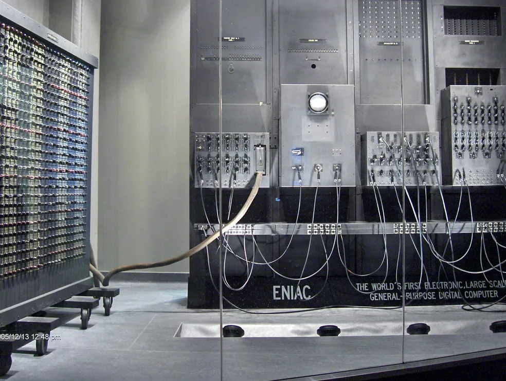

1940s - 1950s: Primeiros Computadores Eletrônicos
Durante a década de 1940 e início da década de 1950, os primeiros computadores eletrônicos foram desenvolvidos. Esses computadores eram grandes e ocupavam salas inteiras. Eles foram projetados para realizar cálculos complexos e processar informações de maneira mais rápida e eficiente do que os métodos manuais anteriores.
Um dos primeiros computadores eletrônicos conhecidos é o ENIAC (Electronic Numerical Integrator and Computer), que foi concluído em 1945. Desenvolvido pelos pesquisadores John W. Mauchly e J. Presper Eckert, o ENIAC era um computador gigantesco, ocupando uma área de aproximadamente 1800 metros quadrados. Ele foi projetado para fins militares e foi usado para realizar cálculos relacionados à balística durante a Segunda Guerra Mundial.